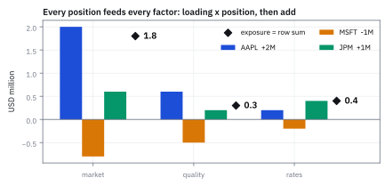
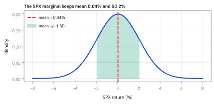
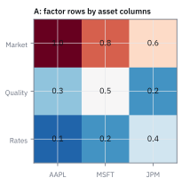
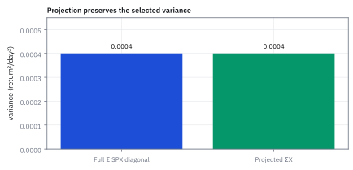

7.3 Marginals of the Multivariate Normal
ฉาย joint Normal ลงแกนเดียวแล้วได้ Normal ที่ใช้ทำ single-name risk
model ความเสี่ยงของเดสก์ครอบคลุมหุ้นไทย หุ้นกู้ และทองคำ ลูกค้ารายหนึ่งถือแค่หุ้นกับทองอย่างละครึ่ง ต้องประมาณ model ใหม่ไหม และพอร์ตนี้ผันผวนปีละเท่าไร?
เฉลย: ไม่ต้อง ตัดแถวและคอลัมน์ของหุ้นกู้ทิ้ง เหลือตาราง 2 × 2 ของหุ้นกับทอง แล้วคิดพอร์ตครึ่งต่อครึ่งได้ variance 0.0144 หรือความผันผวน 12.00% ต่อปี model 500 หุ้นที่ลูกค้าถือ 12 ตัวก็ทำแบบเดียวกัน ตัดตาราง 12 × 12 ออกมาใช้
Marginal of a Multivariate Normal (MVN) คือ distribution ของตัวแปรเดียวที่ดึงออกจากแบบจำลองหลายตัวแปร และยังเป็น Normal; ใช้ทำรายงานหรือคำนวณคำถามเฉพาะตัวแปรได้ตรง ๆ
ศัพท์ที่ใช้ในหัวข้อนี้
- marginal distribution
- distribution ของ component เดียวหลัง integrate components อื่นออก ใช้ทำ single-asset risk จาก joint model
- Multivariate Normal (MVN) distribution
- joint distribution ที่ทุก linear combination เป็น Normal ใช้เป็น source model ของ asset returns
- projection
- การเลือกหรือ map vector ไปยัง component/subspace ที่สนใจ ใช้สร้าง marginal return distribution
- probability density function (PDF)
- density ของ return ที่ integrate แล้วให้ probability ใช้เป็นวัตถุที่ project ออกจาก joint model
- Normal distribution
- distribution ที่กำหนดด้วย mean และ variance ใช้เป็นผลลัพธ์ของ MVN marginal
- variance
- ค่ากระจายรอบ mean ใช้กำหนดความกว้างของ marginal Normal
- covariance
- ค่า co-movement ระหว่าง returns ใช้เก็บ joint structure แม้ถูก project เป็น marginal แล้ว
- spread
- ความกว้างของ distribution รอบ mean ใช้แปล variance ให้เห็นเป็นรูป curve
- margin
- ส่วน distribution ของ asset ตัวเดียวที่แยกจาก joint model ใช้ทำ single-name risk report
- SPX
- ดัชนี S&P 500 ในตลาดสหรัฐฯ ใช้เป็น component ที่ project ออกมา
- AAPL
- หุ้น Apple ในตลาดสหรัฐฯ ใช้เป็น component อื่นที่ถูก integrate ออก
สัญลักษณ์ที่ใช้ในหัวข้อนี้
| สัญลักษณ์ | ความหมาย | หน่วย |
|---|---|---|
| $r$ | full MVN return vector | decimal return/day |
| $r_X$ | selected marginal component | decimal return/day |
| $\mu_X$ | selected mean component | decimal return/day |
| $\Sigma_{X X}$ | selected covariance block | return²/day² |
| $P$ | projection/selection matrix | unitless |
ที่มาที่ไป: รายงานรายตัว จากแบบจำลองรวม
ฝ่ายกำกับและผู้ลงทุนขอความเสี่ยงแยกรายสินทรัพย์เสมอ แต่แบบจำลองที่เราสร้างเป็นแบบรวม
คำถามคือดึงภาพรายตัวออกมาได้อย่างไร และคำตอบสำหรับระฆังคว่ำหลายมิตินั้นง่ายจนน่าตกใจ คือหยิบค่าที่ตรงกับตัวนั้นออกมาตรง ๆ ได้เลย
ความง่ายนี้ไม่ใช่เรื่องบังเอิญ แต่เป็นสมบัติเฉพาะของรูปทรงนี้ ซึ่งเป็นเหตุผลหนึ่งที่มันได้รับความนิยม
แต่ต้องเตือนตัวเองเสมอว่าภาพรายตัวที่ได้มานั้นทิ้งความสัมพันธ์ไปหมดแล้ว การเอาความเสี่ยงรายตัวมาบวกกันเพื่อหาความเสี่ยงรวม เป็นข้อผิดพลาดที่พบบ่อยที่สุดในรายงานที่ทำด้วยมือ
ความเป็นมา: จากปัญหาการฉายเงาหลายมิติ สู่การแยกดูสินทรัพย์รายตัว
ในยุคบุกเบิกของสถิติหลายตัวแปรช่วงต้นศตวรรษที่ 20 นักวิจัยเผชิญความท้าทายอย่างมาก เมื่อต้องการวิเคราะห์ตัวแปรย่อยจากแบบจำลองหลายมิติ เพราะตามหลักทั่วไป การหา marginal distribution จำเป็นต้องคำนวณ multiple integral เพื่อกำจัดตัวแปรอื่นที่เหลือทิ้งไปทั้งหมด หากระบบมี 50 มิติ การ integrate ทิ้ง 49 มิติแทบจะเป็นไปไม่ได้ในทางปฏิบัติ
ทว่า Karl Pearson, Harold Hotelling และนักสถิติรุ่นต่อมาค้นพบคุณสมบัติพิเศษของ Multivariate Normal นั่นคือภาพฉายหรือ marginal ของมันในทุกมิติย่อย ยังคงรักษารูปทรงเป็น Normal distribution เสมอ และ parameter ของตัวแปรย่อยสามารถหยิบออกมาได้โดยตรงจากแถวและคอลัมน์ของ mean vector และ covariance matrix โดยไม่ต้องเสียเวลาทำ integral เลยแม้แต่น้อย
คุณสมบัติการฉายเงาที่รักษาความสมบูรณ์ของระฆังคว่ำนี้เอง ที่ทำให้นักวิเคราะห์ความเสี่ยงในตลาดการเงิน สามารถสร้างแบบจำลองความเสี่ยงของทั้งตลาดพร้อมกัน แล้วดึงเฉพาะความเสี่ยงของหุ้นรายตัว หรือกลุ่มอุตสาหกรรมย่อยออกมารายงานต่อผู้กำกับดูแลได้อย่างรวดเร็วและแม่นยำ
โจทย์ single-index marginal
ให้ $r$ เป็น MVN return vector ของ SPX กับ QQQ จากหัวข้อ 7.1 และให้ $P$ เลือก component ของ SPX สิ่งที่ report ต้องการคือ marginal distribution ของ $r_X=Pr$ โดยไม่ต้อง fit model ใหม่
ขั้นที่ 1 — คำนวณ marginal ออกมาเอง: อินทิเกรตอีกแกนทิ้งด้วยกำลังสองสมบูรณ์
ข้อความที่ว่า marginal ของ MVN ยังเป็น Normal มักถูกยกมาเฉย ๆ สูตรข้างล่างคำนวณมันออกมา และเครื่องมือที่ใช้มีชิ้นเดียวคือกำลังสองสมบูรณ์ สำหรับกรณีที่มีมากกว่าสองตัว ทำซ้ำแบบนี้ทีละแกนจนเหลือแกนที่ต้องการ ผลออกมารูปเดียวกัน และผลพลอยได้ของบรรทัดที่หกถึงเจ็ดคือคำตอบของหัวข้อ 7.4 ทั้งหัวข้อ
ข้อความที่ว่า marginal ของ MVN ยังเป็นระฆัง มักถูกยกมาเฉย ๆ ขั้นนี้คำนวณออกมาจริง เริ่มจากเปลี่ยนหน่วยให้ทั้งสองแกนวัดเป็นจำนวนเท่าของความกว้างตัวเอง แล้วเขียน joint density ตามหัวข้อ 7.1
บรรทัดที่สี่ถึงห้าคือกำลังสองสมบูรณ์ในตัวแปร $v$ เติมและลบ $\rho^{2}u^{2}$ เพื่อรวบสามพจน์ให้เหลือวงเล็บเดียว บวกเศษที่ไม่มี $v$ ลองกระจายกลับเพื่อตรวจได้ ผลคือ density แยกเป็นสองก้อน ก้อนซ้ายไม่มี $y$ เลยจึงเป็นตัวคูณคงที่ของ integral
ก้อนขวาเป็นระฆังที่จุดกลาง $\rho u$ พื้นที่ใต้กราฟจึงเป็น 1 ตามหัวข้อ 1.9 เหลือเฉพาะก้อนซ้าย ซึ่งเป็นระฆังของ $X$ เองทุกตัวอักษร
ขั้นที่ 2 — linear projection
กรณีทั่วไปคือฉายลงบนทิศทางใด ๆ ซึ่งครอบคลุมทั้งการดูตัวเดียวและการดูพอร์ตทั้งกอง จุดที่ควรสังเกตคือ $P$ โผล่สองครั้งในฝั่งความเสี่ยง แต่ครั้งเดียวในฝั่งค่าเฉลี่ย เพราะความเสี่ยงวัดระยะยกกำลังสอง
$P$ คือตารางที่เลือกแถวที่สนใจออกมา หรือจะมองเป็นน้ำหนักพอร์ตก็ได้ ฝั่งค่าเฉลี่ยง่ายกว่า: ดึง $P$ ออกนอกค่าเฉลี่ยได้เลย เพราะมันเป็นตัวเลขที่เราเลือกเอง ไม่ได้สุ่ม เป็นกฎเดียวกับหัวข้อ 1.3 เพียงแต่เขียนเป็นตาราง
ฝั่งความเสี่ยงต้องระวังลำดับ ใส่นิยาม covariance matrix จากหัวข้อ 6.7 แล้วแทนผลต่างที่ดึงตัวร่วมไว้ การทรานสโพสผลคูณต้องสลับลำดับ $P^{\mathsf{T}}$ จึงไปอยู่ขวาสุด สุดท้ายดึง $P$ ทั้งสองข้างออก เหลือ $\Sigma$ ตรงกลางพอดี นี่คือเหตุผลที่ $P$ โผล่สองครั้งฝั่งความเสี่ยง แต่ครั้งเดียวฝั่งค่าเฉลี่ย
ขั้นที่ 3 — one-component marginal
แทนทิศทางที่เลือกเฉพาะตัวเดียว จะเห็นว่ามันกลับไปเป็น Normal ตัวเดียวธรรมดา และที่สำคัญกว่าคือมันให้คำตอบเดียวกับการอินทิเกรตในขั้นที่ 1 ซึ่งเป็นการตรวจว่าสองเครื่องมือที่ต่างกันสิ้นเชิงยังเห็นตรงกัน
ตารางที่เลือกมาหยิบเฉพาะแถวแรกคือ SPX และทิ้ง QQQ เลข 1 หยิบช่องแรก เลข 0 ทิ้งช่องที่สอง
บรรทัดสามคูณสามตารางตามลำดับ ผลคือช่องซ้ายบนของ $\Sigma$ ช่องเดียว พจน์ที่มี $\sigma_{X,Y}$ ถูกคูณด้วยศูนย์จนหายหมด สิ่งที่ได้คือระฆังตัวเดียวธรรมดาที่ใช้ตัวเลขของ SPX เท่านั้น ตรงกับที่ขั้นที่ 1 คำนวณด้วย integral ทุกประการ สองทางที่ต่างกันสิ้นเชิงจึงยืนยันกันเอง
ขั้นที่ 4 — ทำไม marginal ยังเป็นระฆังคว่ำ: จัดกำลังสองสมบูรณ์ในเลขชี้กำลังหนึ่งครั้ง
ขั้นก่อนหน้าบอกว่าหยิบ $\mu_1$ กับ $\sigma_1^2$ ออกมาได้เลย ทำไมถึงง่ายขนาดนั้น คำตอบอยู่ในเลขชี้กำลังของหัวข้อ 7.1
บรรทัดแรกคือกลเดียวกับหัวข้อ 1.10: เติมและหัก $\rho^2z_1^2$ เพื่อให้ $z_2$ อยู่ในกำลังสองสมบูรณ์ ก้อนถัดมาคือการตรวจ คูณ $1-\rho^2$ กลับเข้าไปในด้านขวา เรียกผลว่า A แล้วกระจาย ต้องได้ตัวเศษเดิม
พอเลขชี้กำลังเป็นผลบวกสองก้อน $e^{a+b}=e^{a}e^{b}$ ผิวจึงแยกเป็น ‘ระฆังคว่ำของ $r_1$’ คูณ ‘ระฆังคว่ำของ $r_2$ ที่จุดกลางเลื่อนตาม $z_1$’ (ค่าคงที่ข้างหน้า $\sigma_1\sigma_2\sqrt{1-\rho^2}$ คือ $|\Sigma|^{1/2}$ ที่คำนวณในหัวข้อ 7.1)
รวมพื้นที่ตามแกน $r_2$: ก้อนที่สองเป็นระฆังคว่ำเต็มอัน จึงรวมได้ 1 เหลือระฆังคว่ำของ $r_1$ เพียว ๆ นี่คือทั้งการพิสูจน์ และก้อนที่สองจะกลายเป็น conditional distribution ในหัวข้อ 7.4
Normal ก้อนที่สองเป็น distribution ของ $r_2$ เมื่อกำหนด $r_1$ แล้ว: จุดกลางคือ $\mu_2+\rho\sigma_2z_1$ และ standard deviation คือ $\sigma_2\sqrt{1-\rho^2}$ จึงมีพื้นที่รวมเป็นหนึ่งเมื่อนำไป integrate ตาม $r_2$
ขั้นที่ 5 — พิสูจน์ normalization ของ marginal density ด้วยพิกัดเชิงขั้ว
การตรวจสอบว่า marginal density มีพื้นที่รวมใต้กราฟเท่ากับหนึ่งพอดี สามารถพิสูจน์ได้ถึงรากฐาน โดยเปลี่ยนตัวแปรเป็น $u$ แล้วใช้เทคนิคอินทิเกรตสองมิติบนพิกัดเชิงขั้วเพื่อหาค่า Gaussian integral
เริ่มต้นจากสูตร marginal density ของ $r_X$ แล้วเปลี่ยนตัวแปรเป็นระยะมาตรฐาน $u=(x-\mu_X)/\sigma_X$ ซึ่งให้ $dx=\sigma_X\,du$ ตัวคูณนี้ตัดกับตัวหารด้านหน้าพอดี เหลือ integral ที่ตั้งชื่อว่า I
หัวใจสำคัญอยู่ที่การหาค่า integral ของ $e^{-u^2/2}$ ซึ่งไม่สามารถหา antiderivative ด้วย function พื้นฐานได้ เราจึงคูณ I กับตัวเอง โดยตั้งชื่อตัวแปรของสำเนาที่สองว่า v แล้วรวมเป็น integral สองมิติบนระนาบ $u$-$v$
เมื่อสลับเป็นพิกัดเชิงขั้ว u² + v² = s² พื้นที่ชิ้นเล็ก du dv กลายเป็น s ds dθ ตัว s ที่งอกมานี้คือ Jacobian และทำให้ integral ตาม s หาได้ตรง ๆ ได้ 1 ส่วนมุมรอบวงได้ 2π จึงได้ I² = 2π
เมื่อถอดรากกลับมาจะได้ $I = \sqrt{2\pi}$ ซึ่งเมื่อคูณกับ $1/\sqrt{2\pi}$ ด้านหน้า จะได้พื้นที่รวมเท่ากับหนึ่งบริบูรณ์ ยืนยันว่า marginal นี้เป็น density ที่ถูกต้องตามกฎความน่าจะเป็น
ขั้นที่ 6 — พิสูจน์ marginal ของกลุ่มตัวแปรย่อยผ่าน Moment Generating Function (MGF) และ projection matrix
นอกจากการพิสูจน์ทีละตัวแปรเดี่ยว เราสามารถพิสูจน์ marginal ของกลุ่มตัวแปรย่อยขนาด $k$ มิติใด ๆ ได้อย่างรวดเร็วและทรงพลัง โดยใช้โครงสร้าง block matrix ร่วมกับ Moment Generating Function (MGF)
แบ่ง vector $r$ ออกเป็นสองส่วนคือกลุ่ม $r_1$ ที่สนใจ และกลุ่ม $r_2$ ที่ต้องการละทิ้ง
ใช้ projection matrix $P$ ที่มี identity matrix ขนาด $k$ คัดเลือกเฉพาะบล็อก $r_1$ ออกมา expected value จึงยุบเหลือเพียง $\mu_1$ และ covariance matrix กลายเป็นบล็อก $\Sigma_{11}$
เมื่อตรวจสอบผ่าน Moment Generating Function (MGF) เพียงแค่กำหนดให้ค่าความถี่ของกลุ่ม $r_2$ เป็นศูนย์ พจน์ที่เกี่ยวข้องกับ $\mu_2$, $\Sigma_{12}$ และ $\Sigma_{22}$ จะหายไปทั้งหมดในทันที
ผลลัพธ์ที่เหลืออยู่คือ MGF ของ Multivariate Normal ขนาด $k$ มิติที่มี mean $\mu_1$ และ covariance $\Sigma_{11}$ อย่างสมบูรณ์
ขั้นที่ 7 — โจทย์เปิดเรื่อง: ตัดบล็อกหุ้นกับทองออกจาก model สามสินทรัพย์
model สามสินทรัพย์คือหุ้นไทย หุ้นกู้ ทองคำ ค่าเฉลี่ย 9%, 3%, 5% ความผันผวน 18%, 6%, 15% และ correlation หุ้นกับทอง 0.05 ตามขั้นที่ 6 marginal ของกลุ่มหุ้นกับทองคือบล็อกที่ตรงกันพอดี ไม่ต้องอินทิเกรตหรือประมาณอะไรใหม่ พอร์ตลูกค้าคือ w = (0.5, 0.5) บนหุ้นกับทอง
Σ เขียนเป็นหน่วย 10⁻⁴ ให้อ่านง่าย ช่อง 13.5 × 10⁻⁴ = 0.00135 คือ 0.05 × 0.18 × 0.15 ตัดแถวที่ 2 กับคอลัมน์ที่ 2 ทิ้ง เหลือค่าเฉลี่ยและ covariance ของสองตัวที่ถามตรง ๆ covariance ข้ามกลุ่มที่เกี่ยวกับหุ้นกู้หายไปพร้อมกัน เพราะคำถามไม่ได้แตะหุ้นกู้เลย
พอร์ตครึ่งต่อครึ่งคิดด้วย wᵀΣw จากบล็อกที่ตัดมา ได้ 12.00% พอดี และทองตัวเดียวก็คือแถวเดียวของบล็อก ปีที่ทองให้ผลตอบแทนติดลบมีราว 36.9% ของทุกปี ใน model หุ้น 500 ตัวที่ลูกค้าถือ 12 ตัว ก็แค่ตัดตาราง 12 × 12 ออกมาแบบเดียวกัน
แล้วเอาไปใช้ทำอะไรได้จริงบ้าง
การฉายภาพรวมลงมาที่ตัวเดียวหรือทิศเดียว เป็นการคำนวณที่ต้องทำทุกครั้งที่รายงานความเสี่ยง
ใช้ดึงความเสี่ยงของสินทรัพย์ตัวเดียวออกมาจากแบบจำลองรวม เพื่อรายงานเป็นรายตัว
ใช้คำนวณความเสี่ยงของพอร์ตในทิศใดทิศหนึ่ง เช่นความเสี่ยงต่อการที่อัตราดอกเบี้ยทั้งเส้นขยับขึ้นพร้อมกัน
ใช้ตรวจแบบจำลอง โดยเทียบภาพที่ฉายลงมากับข้อมูลจริงของตัวนั้น
Figure 7.3a — ฉายเงา bivariate Normal ลงมาเป็น marginal

เมื่อ integrate QQQ ออกจาก joint density เส้น SPX marginal ที่ฐานยังมีศูนย์กลาง 0.04% และ spread 2% ตรงกับ parameter เดิม
Figure 7.3b — ค่าเฉลี่ยและความผันผวนของ marginal

SPX marginal ไม่ได้ถูกดึงกลับไปศูนย์: mean ยังอยู่ที่ 0.04% และช่วงหนึ่ง standard deviation คือประมาณ -1.96% ถึง 2.04%
Figure 7.3c — เลือกคนละ component ได้คนละ marginal

selection matrix ที่เลือก SPX ให้ mean 0.04% และ volatility 2% ส่วนการเลือก QQQ ให้ mean 0.03% และ volatility 3% จาก joint MVN ชุดเดียวกัน
Figure 7.3d — ตรวจ variance ของ marginal

selected covariance block ต้องตรงกับ diagonal ที่สอดคล้องใน full covariance matrix; check นี้จับ projection-index bug ได้
Worked Example — โจทย์จิ๋วที่คำนวณได้
โจทย์ให้อะไรมาบ้าง: full Multivariate Normal model ให้ SPX variance 0.0004 และ QQQ variance 0.0009 ต่อวัน. ต้องดึง marginal ของ SPX
คำตอบ: SPX marginal ใช้ mean ช่อง SPX และ variance 0.0004; daily volatility คือ 2%
ตรวจเองใน 10 วินาที: ถอดราก 0.0004 ต้องได้ 0.02 หรือ 2%
แปลว่าอะไร: ดึงแถวและคอลัมน์ที่ตรงกันได้โดยไม่สมมติว่า SPX independent จาก QQQ กับดักคือสลับ asset order ตอนตัด submatrix
กับดัก: project covariance ด้วย $P\Sigma$ อย่างเดียว
covariance ต้อง map เป็น $P\Sigma P^{\mathsf T}$ ถ้าลืม transpose ผลลัพธ์อาจไม่ symmetric และ portfolio variance ต่อไปจะผิด
ข้อจำกัด: วิธีนี้สมมติอะไร และของจริงเป็นอย่างไร
| เรื่อง | วิธีนี้สมมติว่า | ของจริงเป็นอย่างไร | ผลที่ตามมาเวลาใช้งาน |
|---|---|---|---|
| สิ่งที่หายไป | ภาพที่ฉายลงมาพอใช้ | ความสัมพันธ์กับตัวอื่นหายไปหมด | ห้ามเอาความเสี่ยงรายตัวมาบวกกันเพื่อหาความเสี่ยงรวม |
| การเลือกทิศ | รู้ว่าจะฉายลงทิศไหน | ทิศที่อันตรายที่สุดมักไม่ใช่ทิศที่เราคิดจะดู | ต้องหาทิศที่แย่ที่สุดด้วย ไม่ใช่ดูเฉพาะทิศที่คุ้นเคย |
| สมมติฐานเดิม | ข้อจำกัดของแบบจำลองรวมไม่ตามมา | มันตามมาทั้งหมด | ภาพที่ฉายลงมาก็ยังมีหางบางเกินจริงเหมือนต้นฉบับ |
แถวแรกเป็นข้อผิดพลาดที่พบบ่อยที่สุดในรายงานความเสี่ยงที่ทำด้วยมือ
โค้ดตัดบล็อก marginal จาก model สามสินทรัพย์
import numpy as np
from scipy import stats, integrate
mu = np.array([0.09, 0.03, 0.05])
S = 1e-4 * np.array([[324, -21.6, 13.5], [-21.6, 36, 22.5], [13.5, 22.5, 225]])
P = np.array([[1, 0, 0], [0, 0, 1]]) # keep stocks and gold
m1, S11 = P @ mu, P @ S @ P.T
assert np.allclose(m1, [0.09, 0.05]) and np.allclose(S11, [[0.03240, 0.00135], [0.00135, 0.02250]])
w = np.array([0.5, 0.5])
assert abs(w @ S11 @ w - 0.0144) < 1e-12 and abs(np.sqrt(w @ S11 @ w) - 0.12) < 1e-12
assert abs(stats.norm.cdf((0 - 0.05) / 0.15) - 0.369) < 5e-4
f2 = stats.multivariate_normal(m1, S11)
marg = integrate.quad(lambda y: f2.pdf([0.12, y]), -2, 2)[0]
assert abs(marg - stats.norm.pdf(0.12, 0.09, np.sqrt(0.0324))) < 1e-8 # integrating out gold
z1, z2, rho = 0.7, -0.4, 0.3
assert abs((z1 ** 2 - 2 * rho * z1 * z2 + z2 ** 2) / (1 - rho ** 2) - (z1 ** 2 + (z2 - rho * z1) ** 2 / (1 - rho ** 2))) < 1e-12
X = np.random.default_rng(9).multivariate_normal(mu, S, 300_000) @ P.T
assert np.allclose(np.cov(X, rowvar=False), S11, atol=5e-4)โค้ดตัดแถวและคอลัมน์ด้วย P ได้ค่าเฉลี่ยและ covariance ของหุ้นกับทอง พอร์ตครึ่งต่อครึ่งเสี่ยง 12.00% ทองขาดทุนได้ 36.9% ของปี อินทิเกรตทองทิ้งแล้วได้ระฆังของหุ้นพอดี และจำลองได้บล็อกเดียวกัน
สรุปที่ใช้ได้จริง
- marginal ของ MVN ยังเป็น Normal
- projection map mean ด้วย $P\mu$ และ covariance ด้วย $P\Sigma P^{\mathsf T}$
- selected covariance block ต้องตรงกับ full matrix: model หุ้น/หุ้นกู้/ทอง ถามแค่หุ้นกับทองให้ตัดบล็อก 2 × 2 ออกมา แล้วพอร์ตครึ่งต่อครึ่งได้ความผันผวน √0.0144 = 12.00% โดยไม่ต้องประมาณอะไรใหม่
- marginal ไม่ได้แปลว่า assets independent